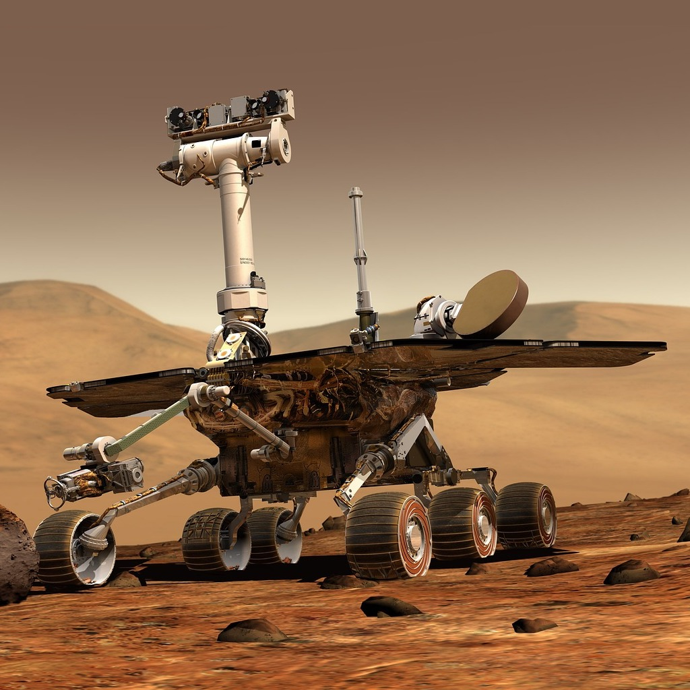

BIG
CAN BE USED FOR MULTIPLE HEADLINES
Fade in
Fade out
Highlight red
Fade in, then out
Slide up while fading in
History of A.I. (v.2023)
-

- The Evolution of AI: Origins to Modern Applications
- Enrique Benimeli
- The Evolution of AI
- The Evolution of AI
- The Evolution of AI
- The Evolution of AI
- The Evolution of AI
1950s-1960s: Origins
Birth of AI as a concept, Turing Test proposed.
r-stack
Stretch Example

Stretch Example
Flowchart
%%{init: {'theme': 'simple', 'themeVariables': { 'darkMode': false }}}%%
flowchart LR
A[Start] --> B{Is it?};
B -- Yes --> C[OK];
C --> D[Rethink];
D --> B;
B -- No ----> E[End];
2010s: Deep Learning
Revival with deep learning, big data's role.
---
title: Animal example
---
classDiagram
note "From Duck till Zebra"
Animal <|-- Duck
note for Duck "can fly\ncan swim\ncan dive\ncan help in debugging"
Animal <|-- Fish
Animal <|-- Zebra
Animal : +int age
Animal : +String gender
Animal: +isMammal()
Animal: +mate()
class Duck{
+String beakColor
+swim()
+quack()
}
class Fish{
-int sizeInFeet
-canEat()
}
class Zebra{
+bool is_wild
+run()
}
2010s: Deep Learning

Ethical Concerns
Job displacement, bias, privacy, and regulation.
Conclusion
Reflecting on AI's journey and ethical responsibilities.
Early AI Challenges
Limitations due to computing power and cognitive understanding.
Expert Systems
Knowledge engineering, decision-making emulation.
Machine Learning Advances
Algorithms for pattern recognition, language processing.
Neural Networks
Inspired by human brain, breakthroughs in recognition.
Revolution of Deep Learning
Complex tasks like image recognition, natural language.
AI Impact on Industries
Healthcare, finance, manufacturing, and entertainment.
Autonomous Vehicles
Advancements and challenges in self-driving technology.
Ethics in AI
Job displacement, algorithmic bias, privacy concerns.
Regulation and Responsibility
Ensuring responsible development and use of AI.
AI in Future Societies
Potential for addressing global challenges.
Human-AI Collaboration
AI as a tool to enhance human capabilities.
Conclusion
Reflecting on the past, present, and future of AI.